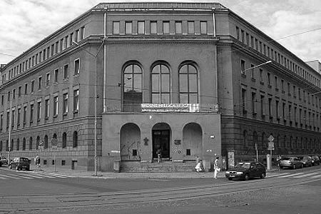
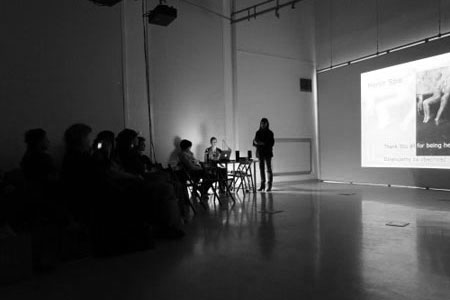
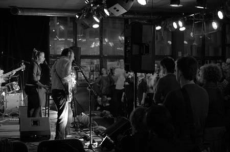
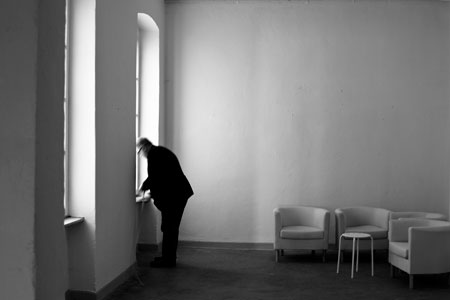
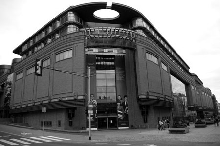
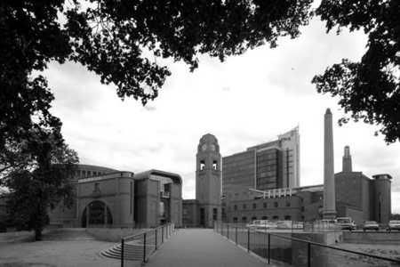

Miejsce
Uniwersytet Artystyczny w Poznaniu
Uniwersytet Artystyczny w Poznaniu (dawna Akademia Sztuk Pięknych) to grupa budynków mieszcząca się w samym centrum miasta, zaledwie parę kroków od poznańskiej starówki i Muzeum Narodowego. Uczelnia była i nadal jest miejscem spotkań różnych koncepcji wielu dziedzin sztuki: od dyscyplin klasycznych po te najbardziej współczesne. Uniwersytecka Galeria Aula, w której odbędzie się główna część tegorocznego sympozjum, stanowi przestrzeń prezentacji twórczości i wymiany myśli studentów oraz uznanych artystów z Polski i ze Świata.
 
Adres:
al. Marcinkowskiego 29
60-967 Poznań 9
Google maps
Meskalina
Klubokawiarnia Meskalina gościć będzie uczestników konferencji podczas TypeShorts, czyli wieczoru pełnego krótkich prezentacji typograficznych, który będzie miał miejsce 18-go czerwca. Mieszcząca się w modernistycznym budynku Galerii Arsenał na środku Starego Rynku, Meskalina jest miejscem wielu ciekawych imprez kulturalnych. Kontynuując tradycję swojego starszego brata Meskala, stała się jednym z ulubionych poznańskich klubów artystycznych, w których zawsze coś się dzieje. Lokal mieści ok. 150 osób, a latem powiększa się o ogródek ze sceną muzyczną.

Adres:
Stary Rynek 6
przy Galerii Miejskiej Arsenał
Google maps
Galeria Szyperska
Galeria Szyperska to miejsce, a raczej przestrzeń, której prostota pozwala bez skrępowania skupić sie na chłonięciu sztuki wszystkimi zmysłami. Do dyspozycji mamy 3 przestronne sale, w których zaprezentowane zostaną towarzyszące sympozjum wystawy. Galeria znajduje się w odległości 15 minut piechotą od Auli Uniwersytetu Artystycznego i Starego Rynku.

Adres:
ul.Szyperska 2
61-754 Poznań
Google maps
Galeria Słodownia, Stary Browar
Przestrzeń zabytkowej Słodowni to trzy poziomy wykorzystywane przez Kulczyk Foundation na wystawy, spektakle, koncerty i projekcje filmowe.
 
Adres:
Stary Browar
ul. Półwiejska 32
61-888 Poznań
Google maps
TypeTalks2 mapa wydarzenia
Design © TypeTalks, 2010–13.
Content © Respective speakers, 2010–13.